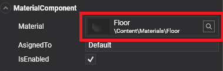
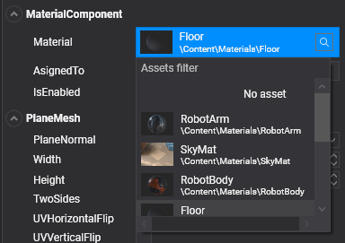

Use assets

We can use an asset in our project in these ways:
- Reference it in an entity Component.
- Reference it from another asset.
- Load it from code.
Reference asset from components.
Lots of components can use assets. For example, MeshComponent uses Model assets and Sprite uses Texture assets.
When a component uses an asset, it will show a Asset Selection Control in its section in the Entity Details panel.

When a Scene is loaded in Evergine, all referenced assets by components will be loaded automatically.
To add an asset to that component, we need to click on it and a Asset Picking Dialog will appear, allowing is to select a desired asset.

- The user can also fill the Asset filter textbox to filter all the assets, making it easier in big projects.
- Clicking the lens icon will select the asset in the Asset Details panel. Useful to locate and edit a specific asset used in your scene.
- Clicking in an asset of the list will select it and set it as the property value of the component.
- To clear the asset reference, just select the No Asset
 element on the list (it's the first one).
element on the list (it's the first one).
Note
The dialog will only shows assets of the same type of the defined by the component property or field.
Reference asset by other assets
In the same way as the components, assets can reference other assets. For example, a Material can reference a Texture and a Texture references a SamplerState asset.
You can reference those assets in the same way you add them to components (see above).
Reference assets by code.
An asset can be loaded an accessed at runtime using in two ways depending of the asset scope:
- AssetsService: For loading global assets, used in more than one Scene.
- AssetsSceneManager: For loading assets in a Scene.
AssetsService loading
AssetsService is a Service that manages all the assets in the application. When loading an asset using this service we are also responsible of unloading it when it's no longer needed.
var assetsService = Application.Current.Container.Resolve<AssetsService>();
Texture textureAsset;
// Asset loading.
// Load asset by id (using EvergineContent).
textureAsset = assetsService.Load<Texture>(EvergineContent.Textures.SampleTexture_png);
// Load asset by path.
textureAsset = assetsService.Load<Texture>("SampleTexture.wetx");
// Load asset by stream (we need to provide an asset name anyways).
textureAsset = assetsService.Load<Texture>("SampleTexture.wetx", stream);
// Asset unloading.
// Unloads asset by id.
assetsService.Unload(EvergineContent.Textures.SampleTexture_png);
// Unload asset by path.
assetsService.Unload("SampleTexture.wetx");
AssetsSceneManager loading
AssetsSceneManager is a SceneManager that controls all the assets in a specific Scene. All the assets loaded through this SceneManager will be unloaded when the Scene is disposed (When navigating to other scenes, for example).
Its methods are pretty similar to the AssetsService.
var assetSceneManager = this.Managers.AssetSceneManager.
Texture textureAsset;
// Asset loading.
// Load asset by id (using EvergineContent).
textureAsset = assetSceneManager.Load<Texture>(EvergineContent.Textures.SampleTexture_png);
// Load asset by path.
textureAsset = assetSceneManager.Load<Texture>("SampleTexture.wetx");
// Load asset by stream (we need to provide an asset name anyways).
textureAsset = assetSceneManager.Load<Texture>("SampleTexture.wetx", stream);
// Asset unloading.
// Unloads asset by id.
assetSceneManager.Unload(EvergineContent.Textures.SampleTexture_png);
// Unload asset by path.
assetSceneManager.Unload("SampleTexture.wetx");
Force new instance when loading
By default when an asset is loaded either in the AssetsService or the AssetsSceneManager only one instance of the asset is generated. This saves GPU memory and time.
However, in some certain occasions we want to load a different instance* of an already loaded asset. For example, we want to load and use a Material and changing it but we don't want to change the rest of instances, only this one.
In this case we can do using the forceNewInstance in the Load method.
// Forces a new instance to load.
Texture textureAsset = assetSceneManager.Load<Texture>(EvergineContent.Textures.SampleTexture_png, true);
Texture textureAsset = assetsService.Load<Texture>(EvergineContent.Textures.SampleTexture_png, true);